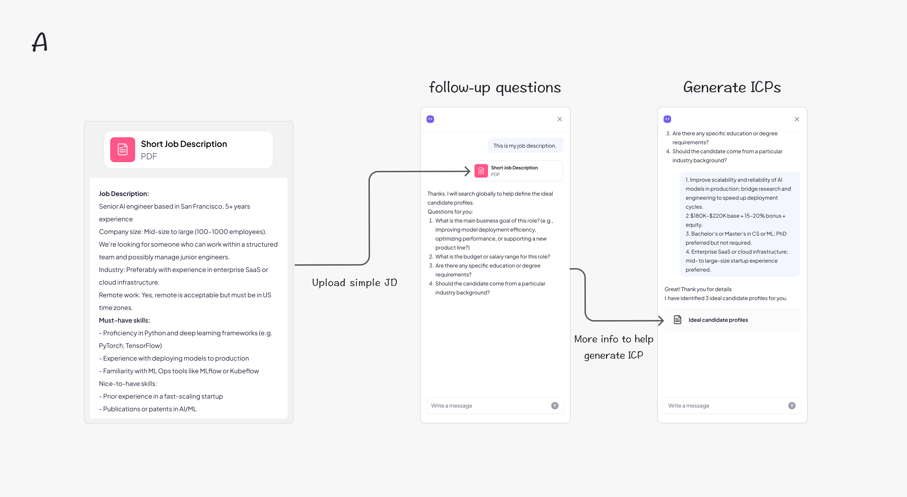
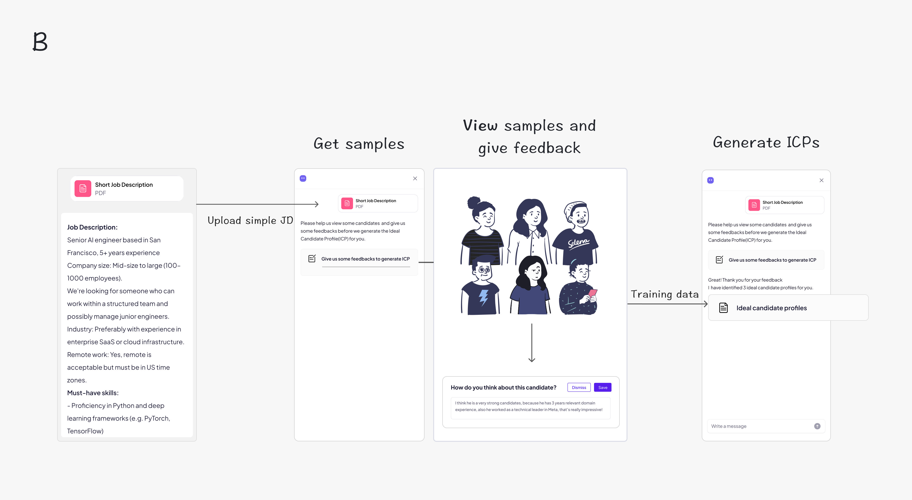
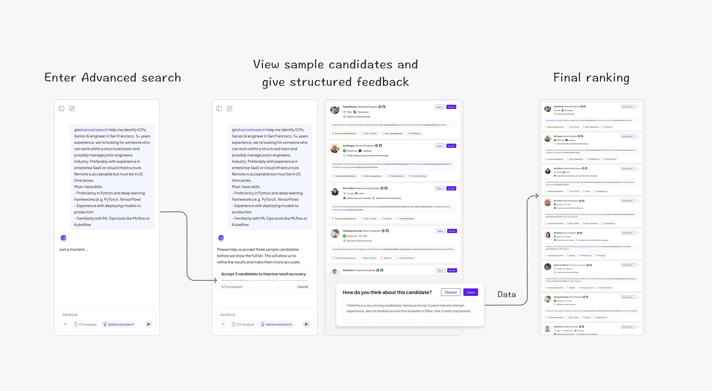
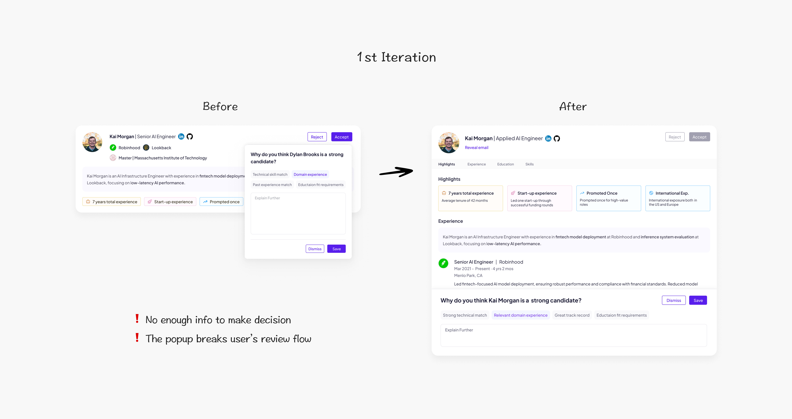
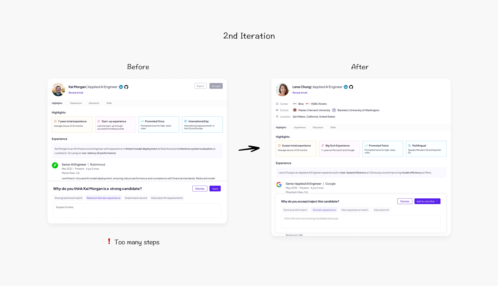
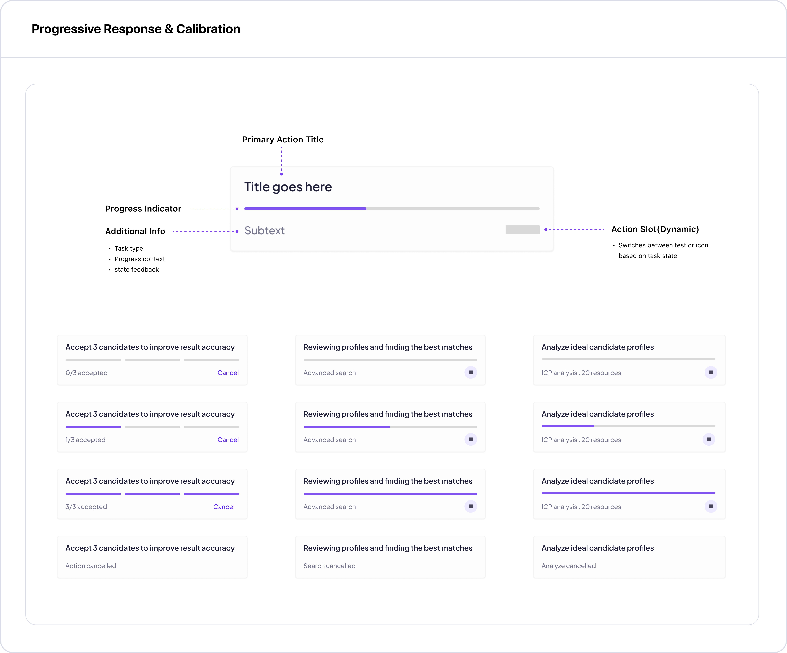
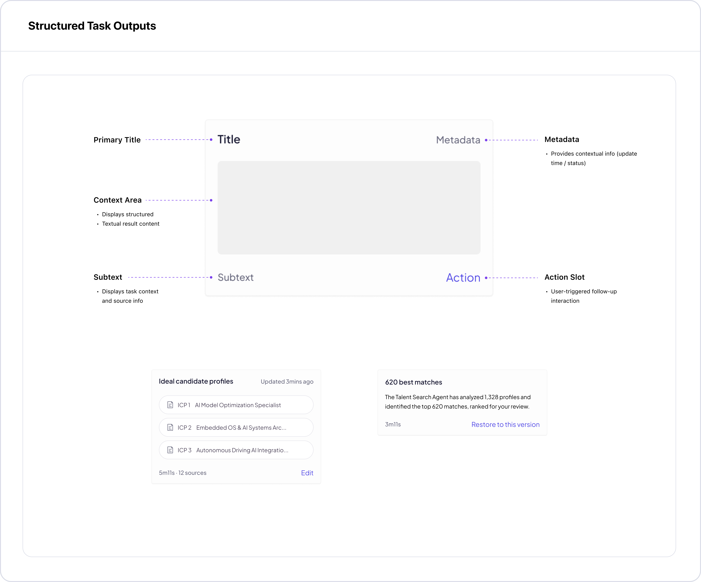
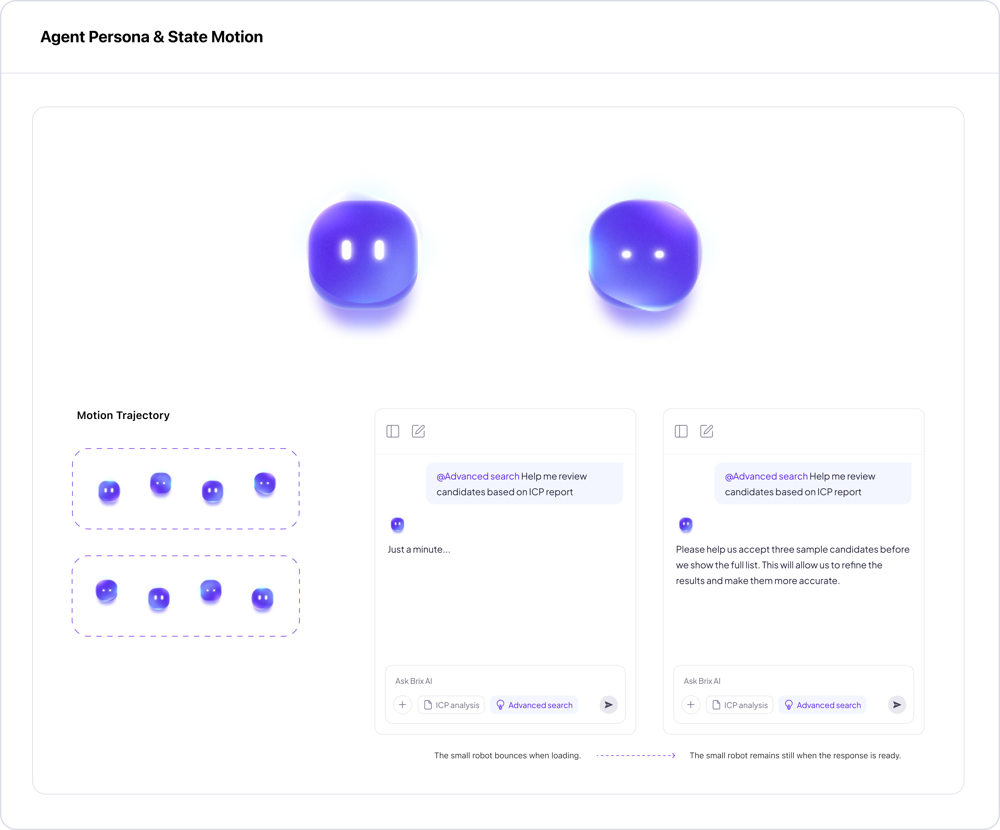
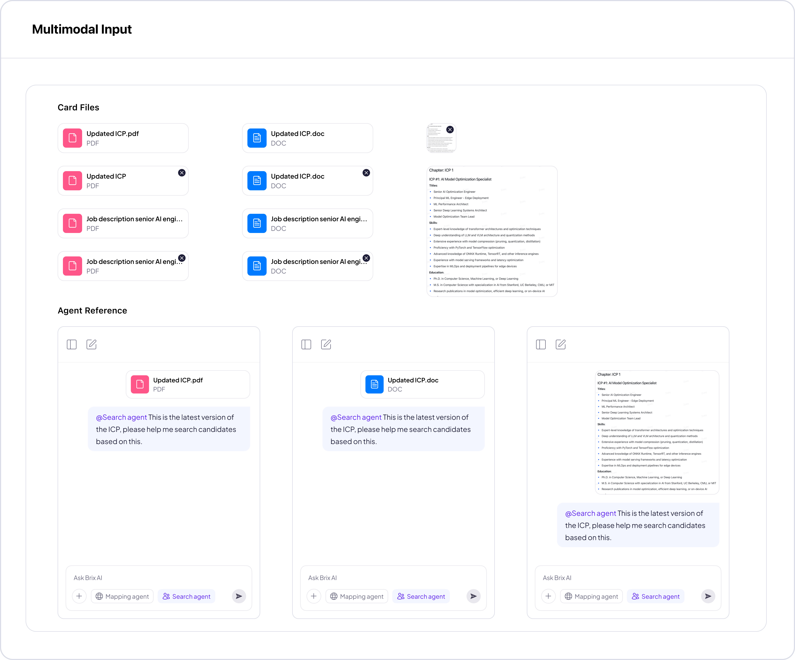
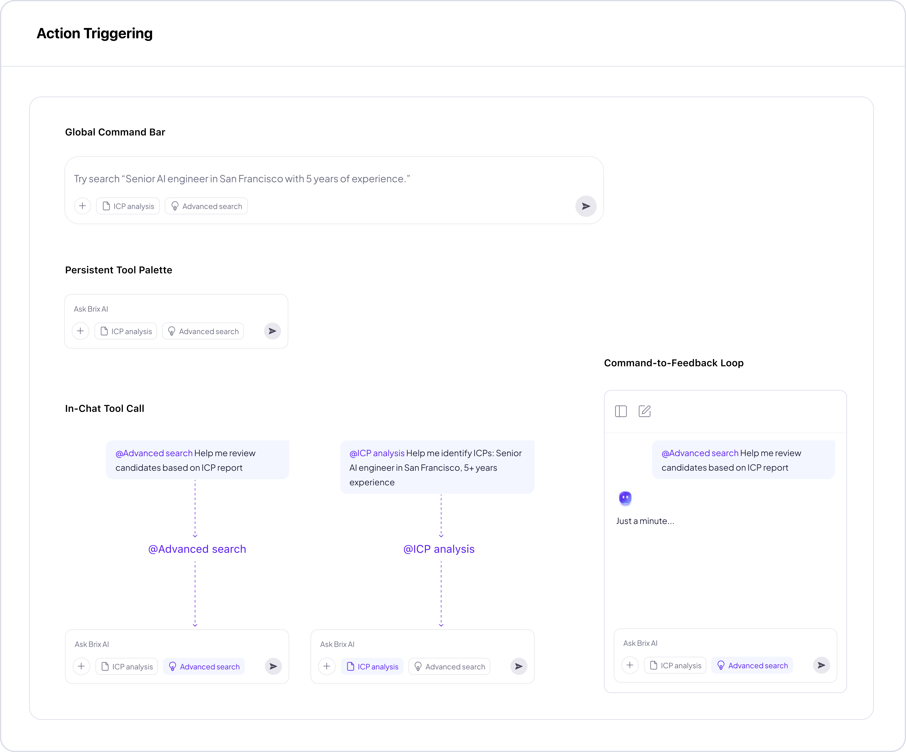

Brix.AI Talent Search
An agent-driven recruiting system that helps recruiters find ideal candidates.
 >
>
An agent-driven recruiting system that help recruiters to find ideal candidates.
This tool helps recruiters streamline candidate screening through an agent-driven workflow. I collaborated with the team and contributed to the end-to-end design process — from research and concept development to product handoff.
joinbrix.com
Build an AI Agentic talent search tool

- Showcase Brix's vision of using intelligent automation to enhance hiring efficiency.
- Prove measurable impact for investors for the next funding round.
- Build a standalone, scalable product that users can use without the need for ATS integration.
Recruiters struggle to identify the right candidates efficiently

Everyone wants different things
Recruiters have to juggle JD requirements, market insights, and internal expectations, making the process messy and error-prone.
Too many back-and-forths
Working with stakeholders takes multiple rounds of revisions, which is slow, exhausting, and can cost 5–15% of total hiring cost.
Recruiting is still guesswork
Recruiters search across platforms and rely on keyword filters and intuition instead of real signals, making it easy to miss top candidates.
Results in three metrics
HMW use AI Agent to help recruiters define and refine Ideal Candidate Profiles (ICP)?
I explored two design directions. Proposal A uses structured questions and human refinement to generate ICPs, while Proposal B relies on feedback-driven automation. As Proposal B requires a feedback loop we’re not ready for, we chose Proposal A for lower cost and faster implementation.


With the flow defined, I designed the first version of the experience. It focused on helping recruiters customize ICPs quickly through a simple, conversational interface.
Initial Exploration: Customize ICPs
Multiple Rounds of Iterations
We tested this version with our users, and professional recruiters pointed out key gaps in detail and low workflow efficiency.

We found that professional recruiters care deeply about efficiency. Their expectations differ from traditional SaaS products — they want the AI agent to handle most of the work with as few steps as possible.

Let's See The Final Design
HMW make the first candidates ranking more accurate and aligned with intent?
Once the ICP design was approved by both the PM and recruiters, we moved on to candidate search and ranking. To improve first-round accuracy, we added a quick feedback mechanism, allowing users to fine-tune results before the full search.

Before showing the full ranking, the system presents a small preview of candidates for quick feedback. The agent then learns from this input to dynamically optimize the ranking.
Initial Exploration Of Feedback Mechanism
We iterated after user testing revealed two issues:
1. Too limited information for decision-making.
2. Popups disrupt the review flow.

Recruiters still felt the process had too many steps. They were eager to see the ranking results and didn't want to spend extra time giving feedback.

Let's See The Final Design
Build a scalable conversational design system
As Brix AI took on more responsibilities in the recruiting workflow, we needed a scalable design system to unify the interface patterns, ensuring consistency in user experience and efficiency in development.
The system defines how the agent communicates, acts, and delivers results — from chat primitives to structured task outputs.





Opportunities I see
Integration with the suite & data migration
Design a standalone ATS and EMS, and reimagine their integration with the AI talent tool — ensuring zero-loss data migration across all three.

More Personalization
Make some explorations on dark mode to modernize the visual style and give recruiters more flexibility and personalization.